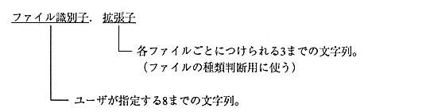
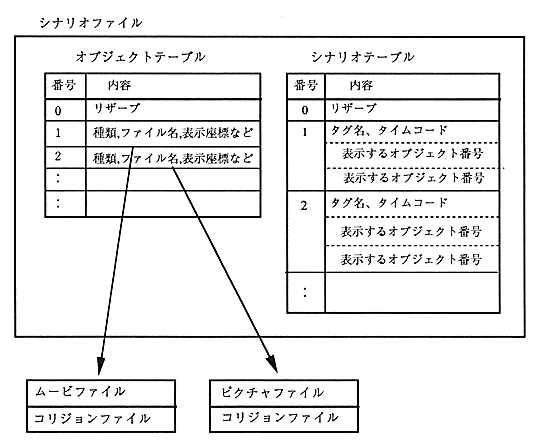

This section explains the rules for the names of files used by Saturn Author.
The rules for naming movie files and collision data files are as follows. Each file is stored in the same directory with the same file identifier.
For details on the file format, see "5.5 File Specifications".

Data file relationship
Figure 5.1 and Figure 5.2 show the relationship between the scenario file and the collision file.

Figure 5.1 Relationship between scenario file and collision file (1)